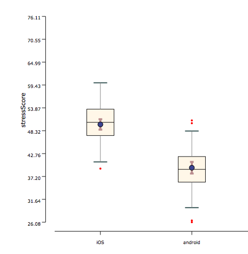
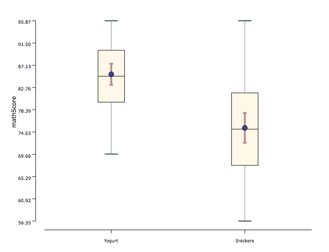

A paired t-test is used when there are 2 conditions are compared and they are paired (i.e., within-groups factor). Paired t-test can be used only when the distributions are normal and homogeneity of variances is met (i.e., the distributions have equal variances). However, since there is no alternative when homogeneity of variances is not met, a paired t-test is used even then.
Conditions:
- Within-subjects experimental design
- The number of Independent Variable is one
- The number of levels in Independent Variable are two
- Your independent variable should consist of two categorical, "related groups" or "matched pairs"
- The dependent variable should be measured on a continuous scale (i.e., it is measured at the interval or ratio level)
- The distribution of the differences in the dependent variable between the two related groups should be approximately normally distributed
- There should be no significant outliers in the differences between the two related groups
- Sampled data from the population of same variance
Examples:
Example 1: In an effect of phone operating systems emotionally on users, two types of phone operating systems(ios and android) were compared in a within-subjects experimental design. As shown in the graph below, the measured stress score was normally distributed in each condition, but they are sampled from same participants hence violating the assumption of independence of paired t-tests.

Example 2:In an effect of food on test scores user study, two types of food items(Yogurt and Snickers) were compared in a within-subjects experimental design. As shown in the graph below, the measured math score was normally distributed in each condition, but they are sampled from same participants hence violating the assumption of independence of paired t-tests.Their variance is about the same.
